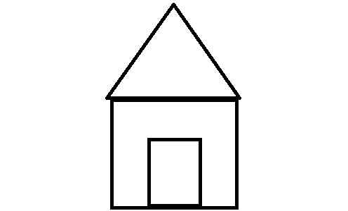

altın, bakır, molibden, manganez, antimuan, volfram gibi metalik madenler ile feldispat, kaolen, kil, manyezit ve mermer gibi endüstriyel hammadde yatak ve zuhurları bulunmaktadır.

Anasayfaya dönmek için basın